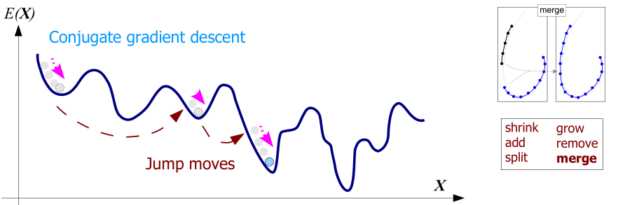

Continuous Energy Minimization for Multi-Target Tracking

Abstract
Many recent advances in multiple target tracking aim at finding a
(nearly) optimal set of trajectories within a temporal window. To handle
the large space of possible trajectory hypotheses, it is typically
reduced to a finite set by some form of data-driven or regular
discretization. In this work we propose an alternative formulation of
multi-target tracking as minimization of a continuous energy. Contrary
to recent approaches, we focus on designing an energy that corresponds
to a more complete representation of the problem, rather than one that
is amenable to global optimization. Besides the image evidence, the
energy function takes into account physical constraints, such as target
dynamics, mutual exclusion, and track persistence. In addition, partial
image evidence is handled with explicit occlusion reasoning, and
different targets are disambiguated with an appearance model. To
nevertheless find strong local minima of the proposed non-convex energy
we construct a suitable optimization scheme that alternates between
continuous conjugate gradient descent and discrete trans-dimensional
jump moves. These moves, which are executed such that they always reduce
the energy, allow the search to escape weak minima and explore a much
larger portion of the search space of varying dimensionality. We
demonstrate the validity of our approach with an extensive quantitative
evaluation on several public datasets.
References
Continuous Energy Minimization for Multi-Target Tracking
A. Milan,
S. Roth and
K. Schindler
PAMI 36(1), 2014
bibtex |
video

@article{Milan:2014:CEM,
author = {Milan, A. and Roth, S. and Schindler, K.},
title = {Continuous Energy Minimization for Multitarget Tracking},
volume = {36},
issn = {0162-8828},
doi = {10.1109/TPAMI.2013.103},
number = {1},
journal = {IEEE TPAMI},
year = {2014},
pages = {58--72}
}
An Analytical Formulation of Global Occlusion Reasoning for Multi-Target Tracking
A. Andriyenko,
S. Roth and
K. Schindler
ICCV Workshop on Visual Surveillance
bibtex |
poster |
video
@inproceedings{Andriyenko:2011:AFG,
Author = {Anton Milan and Stefan Roth and Konrad Schindler},
Booktitle = {Proc. of the 11th International IEEE Workshop on Visual Surveillance},
Title = {An Analytical Formulation of Global Occlusion Reasoning for Multi-Target Tracking},
Year = {2011}
}
Multi-target Tracking by Continuous Energy Minimization
A. Andriyenko and
K. Schindler
CVPR 2011
bibtex |
poster |
video
@inproceedings{Andriyenko:2011:MTT,
Author = {Anton Andriyenko and Konrad Schindler},
Booktitle = {CVPR},
Title = {Multi-target Tracking by Continuous Energy Minimization},
Year = {2011}
}
Code
 A new version of the code is now on bitbucket
A new version of the code is now on bitbucket
The original release is still available:
contracking-v1.0.zip (6.3 MB)
Detections
Plese note that our code does not include a person detector. Due to various reasons we are unable to provide the exact same version that we used in our publications. However, you can download a state-of-the-art HOG detector here. Alternatively, you can use the well-known DPM detector.